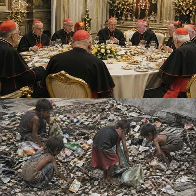

¿Has leído o escuchado esta afirmación en las redes sociales? —Seguramente sí. Pero, tratando de ser objetivos, se trata de una aseveración tan contundente como engañosa, que no resiste un análisis económico serio. Si bien es una frase potente, emocional y fácil de compartir, desde las ciencias económicas —no desde la fe ni desde el rechazo a la religión— la realidad es mucho más compleja que eso. Y esa complejidad importa.


Y es que aunque la idea suene atractiva y sea viral, es en realidad simplista. Ya que este tipo de afirmaciones suele surgir de una intuición simple, pero comprensible: si una institución es rica y hay pobreza, entonces bastaría con redistribuir esa riqueza para resolver el problema. Sin embargo, la economía real no funciona así.
Es decir, no es que las personas que difunden estas ideas estén mintiendo deliberadamente, lo que pasa es que suelen desconocer aspectos básicos como la diferencia entre riqueza y dinero disponible, cómo funcionan los sistemas alimentarios, y cuáles son los límites logísticos y políticos de la ayuda.
Veamos:
-
No, la Iglesia no puede acabar por sí sola con el hambre mundial.
Porque el hambre no es algo tan simple como falta de dinero. Es el resultado de múltiples factores, como conflictos armados, corrupción, mala gestión estatal, falta de infraestructura (carreteras, almacenamiento, transporte), desigualdad en acceso a la tierra, y fallos en los mercados locales. De modo que, aunque mañana apareciera una enorme cantidad de dinero para aplacar el hambre mundial, eso no garantizaría que los alimentos llegaran a quienes los necesitan, ni que el problema desaparecería de forma sostenible.
Desde la economía del desarrollo esto está claro: el hambre es un problema estructural, no sólo financiero. Por eso ni siquiera los Estados más ricos del mundo han logrado eliminarla por completo dentro de sus propias fronteras, lo que ya debería hacernos sospechar de soluciones simples.
-
Sí, la Iglesia tiene recursos importantes… pero no son «dinero en efectivo».
Es verdad que la Iglesia Católica posee una gran cantidad de activos: templos y catedrales, obras de arte, terrenos y edificios históricos. Pero aquí está el punto clave que suele ignorarse: la mayor parte de esa riqueza es ilíquida. Es decir, no se puede convertir fácilmente en dinero utilizable. Por ejemplo, no puedes vender una catedral medieval sin consecuencias culturales, legales y políticas enormes. Además de que muchas propiedades están destinadas a funciones específicas (culto, educación, salud). Por lo que vender esos activos masivamente, podría incluso destruir su valor económico.
O, dicho en términos simples: no todo lo que «vale mucho», puede usarse inmediatamente para gastar.
-
¿Por qué no simplemente vender todo y repartir el dinero?
Esto es algo que suena lógico, pero económicamente tiene varios problemas serios:
-
Efecto de «venta masiva».
Si una institución intenta vender enormes cantidades de activos al mismo tiempo, los precios caen, pierden valor, y no se obtiene el dinero esperado.
-
Problemas logísticos.
Incluso con dinero, ¿cómo se distribuyen alimentos en zonas en guerra? ¿Cómo se evita la corrupción local? ¿Cómo se asegura continuidad en el tiempo?
-
Dependencia y corto plazo.
Dar recursos sin cambiar estructuras no resuelve el problema a largo plazo, y genera dependencia. Por eso el hambre no se soluciona con un gran «cheque único».
-
-
Sí es legítimo exigir transparencia y eficiencia.
Ahora bien, que la solución viral sea falsa, no significa que la Iglesia quede fuera de crítica económica. Como cualquier gran institución global, es razonable exigirle transparencia financiera, rendición de cuentas, eficiencia en el uso de los recursos, y coherencia entre discurso y acción.
Además, en muchos países las organizaciones religiosas gozan de beneficios fiscales, lo cual refuerza la necesidad de supervisión.
Y esto no es un ataque a la fe, sino una exigencia estándar en economía pública.
-
El error central: confundir riqueza con capacidad de resolver problemas complejos.
La idea de «Tiene riqueza, por tanto, debería eliminar el hambre», falla porque ignora la complejidad del sistema económico global, asume que el dinero se traduce automáticamente en soluciones, y subestima factores políticos, sociales y logísticos.
Es, sin embargo, una forma de pensamiento común en las redes sociales: intuitiva, emocional… pero incorrecta.
-
Una crítica válida (aunque distinta).
Ahora bien, desde el punto de vista de la economía conviene ser claros en algo: que esa afirmación tan difundida en las redes sociales sea falsa, no significa que sea aceptable que instituciones religiosas acumulen riqueza. Especialmente cuando muchos de sus fieles viven en pobreza, y cuando su discurso enfatiza humildad y ayuda al necesitado.
Aquí sí hay una tensión legítima, pero no porque la Iglesia pueda «resolver el hambre mundial», sino porque su estructura económica puede parecer contradictoria con su mensaje moral. Esa crítica es válida, pero es otra discusión.
Así que, sobre esa afirmación tan difundida en las redes sociales, podemos concluir lo siguiente:
No es cierto que la Iglesia Católica pueda alimentar cinco veces a todos los niños hambrientos del planeta.
Sí posee recursos importantes, pero en gran parte no son fácilmente convertibles en ayuda directa.
Es totalmente legítimo exigir transparencia y eficiencia en el uso de esos recursos.
Pero es simplista —y económicamente incorrecto— pensar que acumular riqueza implica poder resolver por sí sólo un problema global tan complejo como el hambre.
La realidad, aunque menos viral, es más incómoda: el hambre no se resuelve con indignación ni con cálculos simplificados, sino con sistemas económicos, políticos y sociales funcionando correctamente. Y eso, lamentablemente, es mucho más difícil que compartir una frase en redes sociales.
Ciertamente la religión católica muestra contrastes que hasta podríamos llamar ofensivos a la dignidad humana: en un extremo, el brillo del oro, los muebles lujosos y la solemnidad de los altos jerarcas católicos disfrutando de un banquete en un palacio del Vaticano; y en el otro, la crudeza de la miseria, con niños escarbando entre desechos en busca de algo que llevarse a la boca.
Es verdad, desde la economía, no basta con señalar esa contradicción y concluir que bastaría con «repartir esa riqueza» entre los pobres. Pero reconocer la complejidad del problema tampoco debería servir como excusa para la indiferencia. Que la Iglesia Católica no pueda, por sí sola, erradicar el hambre, no significa que no pueda hacer más, vivir de otra manera, y priorizar con mayor claridad a quienes más sufren.
Incluso dejando de lado la fe, hay una cuestión de coherencia humana básica. Si una institución predica compasión, humildad y ayuda al prójimo, resulta razonable esperar que sus dirigentes encarnen esos valores de forma más visible y radical. Puede que sea impensable que cumplan literalmente el mandato atribuido a Jesús en los evangelios (Marcos 10:21, Mateo 19:21) —vender todo y darlo a los pobres—, pero entre ese ideal absoluto y el lujo institucional, hay un amplio margen para una vida más austera, más cercana a los necesitados, y más honesta en su compromiso social.
No se trata, pues, de exigir milagros económicos, sino de reclamar algo mucho más sencillo y, a la vez, más exigente: empatía real traducida en decisiones concretas.
[Godless Freeman]
Comentarios
Comments powered by Disqus